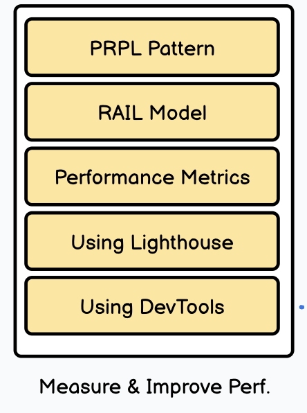
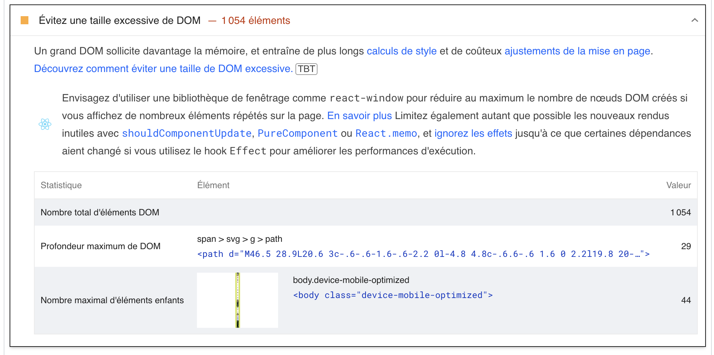
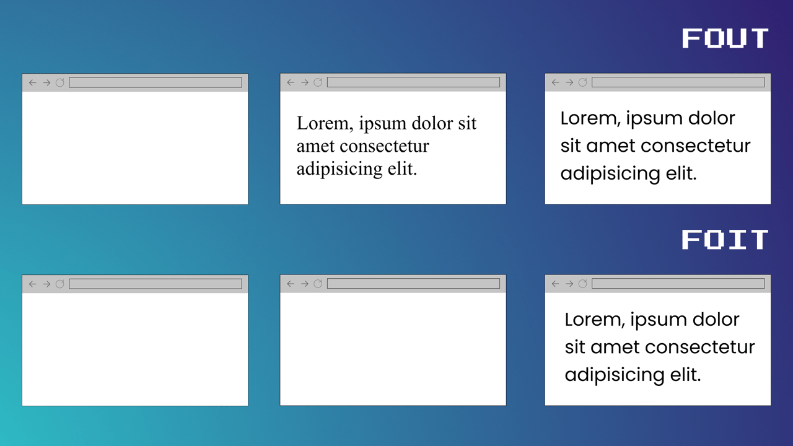

Rendre son site plus performant 🚀

Katia Moreira
MMI 2 - 13/02/2025
Plan du cours
- 📏 La performance et comment la mesurer
- 📋 Les différentes métriques
- 💡 Comment améliorer les perfs
- 🧠 Entre réalité et perception
On avance sur la roadmap
1. La performance et comment la mesurer
La performance et comment la mesurer
- Performance = rapidité avec laquelle votre site s'affiche 🚀
- Performance 💻 front-end vs performance ⚙️ back-end

La performance et comment la mesurer
Pourquoi améliorer la performance de son site ?
- 53% des utilisateur·rice·s abandonnent un site qui met plus de 3 secondes à se charger sur mobile
- La capacité d'attention d'un être humain est passée de 12 secondes en 2000 à 8 secondes en 2015 (c'est 9 pour un poisson rouge 🐟)
La performance et comment la mesurer
Pourquoi améliorer la performance de son site ?
- 👤 Améliorer l'expérience utilisateur et diminuer le taux de rebond
- 👌 Optimiser le réferéncement de son site
- 📱 Assurer la compatibilité de son site sur différents appareils et pour différentes vitesses de connexion
- 📉 Consommer moins de ressources
La performance et comment la mesurer
Pourquoi améliorer la performance de son site ?
➡️ Un site lent est un site que les utilisateurs vont quitter rapidement
La performance et comment la mesurer
- 🎯 Objectif : faire en sorte que le site (ou une partie de celui-ci) s'affiche le plus rapidement possible
- Pour améliorer la performance de son site il faut déjà commencer par la mesurer
La performance et comment la mesurer
Les différents outils de mesure
- PageSpeed Insights : outil de performance proposé par Google (existe aussi en extension navigateur)
- WebPageTest
- GTmetrix
- Console navigateur
La performance et comment la mesurer
Les différents outils de mesure : outils en ligne
La performance et comment la mesurer
Les différents outils de mesure : outils en ligne
- Testez un site (par exemple lemonde.fr ou un site que vous avez développé) sur les différents outils de mesure
- ⚠️ Il faut que le site soit en ligne et pas sur votre local
- Réalisez les tests sur 3 onglets différents et laissez les ouverts

La performance et comment la mesurer
Les différents outils de mesure : la console navigateur

2. Les différentes métriques
Les différentes métriques
- Se baser uniquement sur le temps de chargement global d'un site ne suffit pas
- Les outils permettant de mesurer la performance d'un site utilisent différentes métriques
- Ce sont des indicateurs qui vous permettent de cibler les différents problèmes de performance de votre site
Les différentes métriques
FCP - First Contentful Paint
Temps avant l'apparition du premier élément

Les différentes métriques
FCP - First Contentful Paint
Temps avant l'apparition du premier élément
- Cet indicateur est très important car il permet de faire patienter l'utilisateur en lui montrant que le site est en train de charger et que quelque chose est bien en train de se passer
- Il vaut mieux un site dont le premier élément s'affiche très rapidement même s'il se passe un peu de temps pour que toute la page charge plutôt qu'un site qui affiche longtemps une page complètement blanche
Les différentes métriques
FCP - First Contentful Paint
Temps avant l'apparition du premier élément

Les différentes métriques
LCP - Largest Contentful Paint
Temps avant l'apparition de l'élément le plus grand

Les différentes métriques
LCP - Largest Contentful Paint
Temps avant l'apparition de l'élément le plus grand

Les différentes métriques
LCP - Largest Contentful Paint
- Le temps de chargement avant l'apparition du premier élément (FCP) n'est pas toujours pertinent (si le site affiche un loader par exemple)
- Le but du LCP est de mesurer le temps de chargement du contenu principal de la page
Les différentes métriques
LCP - Largest Contentful Paint
Temps avant l'apparition de l'élément le plus grand

Les différentes métriques
CLS - Cumulative Layout Shift
Indicateur qui mesure le déplacement des éléments
de la page lors du chargement
Les différentes métriques
CLS - Cumulative Layout Shift
Indicateur qui mesure le déplacement des éléments
de la page lors du chargement
- Cet indicateur permet de mesurer la stabilité visuelle d'une page
- Il permet également d'éviter des actions inattendues pour l'utilisateur
Les différentes métriques
CLS - Cumulative Layout Shift
Les différentes métriques
CLS - Cumulative Layout Shift
Indicateur qui mesure le déplacement des éléments
de la page lors du chargement

Les différentes métriques
FID - First Input Delay
Temps de réaction suite à la première interaction de l'utilisateur
Les différentes métriques
FID - First Input Delay
Temps de réaction suite à la première interaction de l'utilisateur
- La vitesse d'affichage d'une page ne suffit pas à évaluer sa performance
- Un site étant interatif il est important de savoir quand l'utilisateur pourra commencer à interagir avec
Les différentes métriques
FID - First Input Delay
Temps de réaction suite à la première interaction de l'utilisateur

Les différentes métriques
INP - Interaction to Next Paint
Délai entre une interaction et le moment où la page affiche une réponse
- Une interaction = un clic, un touch, un appui sur une touche de clavier
- Evalue la réactivité globale d'une page
Les différentes métriques
INP - Interaction to Next Paint
Délai entre une interaction et le moment où la page affiche une réponse

Les différentes métriques
FID vs INP
Les différentes métriques
Les Core Web Vitals
Pris en compte dans les résultats de recherche Google depuis juin 2021

Les différentes métriques
Les Core Web Vitals

3. Comment améliorer les perfs
Comment améliorer les perfs
Code HTML
- Diminuer la taille du HTML de la page
- Limiter la profondeur du DOM
- Attention à certains frameworks/CMS qui génèrent le markup
Comment améliorer les perfs
Code HTML
Comment améliorer les perfs
Les fonts
On dispose de 2 stratégies pour gérer l'apparition des fonts
- FOIT (Flash of Invisible Text) : Le texte reste invisible tant que la police personnalisée n'est pas chargée.
- FOUT (Flash of Unstyled Text) : Le texte s'affiche avec une police de secours (fallback) avant d’être remplacé par la police personnalisée.
Comment améliorer les perfs
Les fonts
Comment améliorer les perfs
Les fonts
- ➡️ On préfèrera la stratégie FOUT afin d'aficher du contenu au plus tôt
- Cela permettra d'améliorer les scores des indicateurs FCP et LCP
Comment améliorer les perfs
Les fonts
-
Utiliser
font-display: swap;
@font-face {
font-family: 'EBGaramond';
src:
url('/fonts/EBGaramond/EBGaramond-Regular.woff2') format('woff2'),
url'/fonts/EBGaramond/EBGaramond-Regular.woff') format('woff');
font-style: normal;
font-weight: normal;
font-display: swap;
}
Comment améliorer les perfs
Les fonts
-
Utiliser
font-display: swap;

Comment améliorer les perfs
Les fonts
- ⚠️ Utiliser
font-display: swap;peut améliorer vos indicateurs FCP et LCP mais créer des layout shifts (et donc augmenter le score de l'indicateur CLS) - Pensez à bien tester les conséquences du changement de font au cours du chargement et à choisir une poilce de fallback proche de la police finale.
Comment améliorer les perfs
Les ressoures tiers
- Eviter de dépendre de serveurs tiers
- Google Fonts, cdn

Comment améliorer les perfs
Les ressoures tiers
Comment améliorer les perfs
Code CSS
- Minifier le code (utiliser un outil en ligne, un plugin PostCSS, un builder comme Vite)
- Supprimer le code inutile avec PurgeCSS (en outil seul ou comme plugin)
Comment améliorer les perfs
Code JS
- Minifier le code (utiliser un outil en ligne, un plugin PostCSS, un builder comme Vite)
- Ne pas charger de scripts inutiles
- N'importer que ce qui est nécessaire et supprimer le code mort (tree shaking)
- ⚠️ Attention aux scripts de tracking type pixel tracker
- Charger les scripts de manière optimisée avec async et defer
Comment améliorer les perfs
Async / Defer
- defer : ne pas bloquer le rendu HTML lors du chargement du script (bon pour le FCP)
- async : charger les fichiers JS de façon asynchrone (⚠️ ne respecte pas l'ordre d'inclusion des scripts)
Comment améliorer les perfs
Async / Defer
Comment améliorer les perfs
Optimiser les images
Faire attention aux dimensions de l'image
- Rien ne sert de charger une image de 3000px si elle prends 400px sur votre site
- Attention toutefois aux écran retina
Comment améliorer les perfs
Optimiser les images
Utiliser des responsive img

📌 Le fonctionnement des attributs srcset et sizes n'est pas toujours évident à comprendre.
Voici un article qui l'explique très bien.
Comment améliorer les perfs
Optimiser les images
Utiliser le bon format d'image
- JPG pour les photos
- PNG pour les applats de couleur (type logo) ou images avec transparence
- SVG pour les images qui peuvent être décrites mathématiquement et affichées en différentes tailles
- WebP de manière générale
Comment améliorer les perfs
Optimiser les images
Utiliser un compresseur d'image
Comment améliorer les perfs
Optimiser les images
Faire du lazyloading
- ⚠️ A éviter pour les images en haut de page

Comment améliorer les perfs
Optimiser les images
Spécifier la taille de vos images pour éviter les layout shifts
- Indiquer la width et la height de l'image
- Utiliser aspect-ratio pour indiquer son ratio
img {
aspect-ratio: 16/9;
}
Comment améliorer les perfs
Optimiser les images
Spécifier la taille de vos images pour éviter les layout shifts
Comment améliorer les perfs
Optimiser les images
✍ En résumé
- Faire attention aux dimensions de l'image
- Utiliser le bon format d'image
- Utiliser des responsive img
- Utiliser un compresseur d'image
- Faire du lazyloading
- Spécifier la taille de vos images
Comment améliorer les perfs
- On a vu plusieurs techniques pour améliorer la vitesse de chargement de votre page
- Un dernier élément qui est très important : les différents indicateurs de google se basent sur la partie visible de votre site lors du chargement
- Il convient donc surtout d'optimiser les éléments en haut de page : above the fold
Comment améliorer les perfs
Above the fold
C'est l'heure de l'exercice 🤓
Exercice 🤓
Objectif : trouver les corrections à effectuer pour améliorer les performances d'un site HTML/CSS
Télécharger le code source du site
https://github.com/kaymorey/html-template
Vous pouvez trouver 8 améliorations à faire
Exercice 🤓
Objectif : trouver les corrections à effectuer pour améliorer les performances d'un site HTML/CSS
- Ne pas utiliser la font depuis Google Fonts mais utiliser font-face (ne pas oublier le font-display: swap)
- On est un peu obligés de conserver le chargement de font awesome ici mais on peut utiliser async ou defer
- Minifier les fichiers CSS
- L'image hotel-mer.jpg est beaucoup trop grande, il faut la redimensionner
- Idem pour l'image fort.jpg
- Utiliser du svg pour l'image du logo
- Utiliser la version jpg de l'image au-coeur-eau
- Supprimer l'inclusion de jquery qui est inutile
4. Entre réalité et perception
Entre réalité et perception
La notion de temps
- 🕒 Le temps objectif (la mesure du temps en secondes, minutes etc)
- 🧠 Le temps psychologique (le temps ressenti)
Entre réalité et perception
La notion de temps

Entre réalité et perception
Sur le web
- Entre 0 et 100ms : immédiat, délai non ressenti
- 100ms : temps maximum de réaction à une interaction (FID)
- 2 secondes : temps au bout duquel il doit se passer quelque chose (FCP)
- 2 à 5 secondes : temps de chargement optimal
- 5 à 10 secondes : risque de distraction et donc de perdre l'utilisateur
Entre réalité et perception
📈 La perception n'est pas linéaire
- Type et complexité de la tâche
- Expérience sur des tâches similaires
- Disposition de l'utilisateur·rice (fatigue, stress...)
Entre réalité et perception
🎮 Les facteurs sur lesquels on peut jouer
- Stimulation (indices qui rappelent l'attente)
- Durée (réelle ou ressentie)
- Attention (occupation du cerveau à une tâche ou une autre)
Entre réalité et perception
Comment améliorer la perception de l'attente ?
- 🕒 Améliorer le temps objectif ✅
- ⌛ Donner des indicateurs d'attente
- 🕹️ Détourner l'attention
- 🪄 Mentir à l'utilisateur·rice
Entre réalité et perception
🚀 Les réponses immédiates
- Survol, focus d'un élément
- Action instantanée traitée en JS
Entre réalité et perception
⏲️ Indiquer l'attente
- Le spinner
- La barre de chargement
- Les faux contenus
- Les mots
Entre réalité et perception
Le spinner, pour une attente courte

- Idéal entre 2 et 8 secondes
- Ne pas afficher de spinner en dessous de 2 secondes
- Au delà de 8 secondes l’utilisateur·rice
perd sa capacité d’attention
Entre réalité et perception
Des spinners originaux, pour une attente plus longue


- Un effet original et travaillé peut
intriguer ou amuser l’utilisateur·rice - Permet d’augmenter un peu
le délai d’attente sans décourager
Entre réalité et perception
Des spinners originaux, pour une attente plus longue


Entre réalité et perception
La barre de chargement, pour une attente quantifiable

- Le traitement risque de durer plus de 8 secondes
- La durée ou le nombre d'items à traiter est mesurable
- On peut y ajouter une indication de pourcentage
Entre réalité et perception
La barre de chargement, pour une attente quantifiable


Entre réalité et perception
Un indicateur proche
- Pour qu’un indicateur ait du sens, il doit être proche de la zone activée par l’utilisateur·rice.
Entre réalité et perception
Les faux contenus ou le Skeleton screen

- Permet de fournir du contenu au compte-gouttes
- Le faux contenu peut servir à
l’utilisateur·rice à se projeter et faciliter la
phase de découverte
Entre réalité et perception
Les faux contenus ou le Skeleton screen

Entre réalité et perception
Les faux contenus ou le Skeleton screen
Entre réalité et perception
Expliquer pourquoi l'utilisateur doit attendre
- Permet d’être explicite sur le processus
- Donner des chiffres sert d’estimatif du temps restant
- Permet de donner de la lecture
Entre réalité et perception
Expliquer pourquoi l'utilisateur doit attendre

Entre réalité et perception
Détourner l'attention de l'attente
- L'attente passe de passive à active
- Action ludique, amusante ou utile

Entre réalité et perception
Détourner l'attention de l'attente

Entre réalité et perception
Mentir sur le temps d'attente
- Fake it until you make it
Entre réalité et perception
Mentir sur le temps d'attente
Liens utiles
Merci pour votre attention 👩💻👨💻 !
Une question ?
- 🦋 Bluesky @kaymorey
- 📧 ktia.morei@gmail.com
- 👾 Retrouvez-moi sur discord